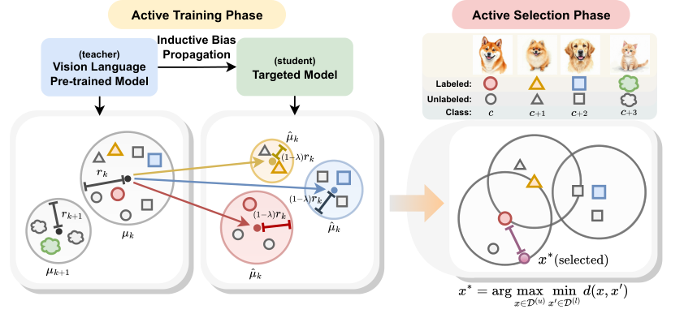
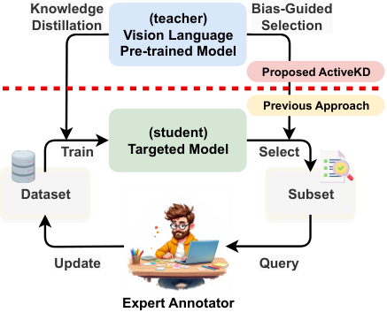
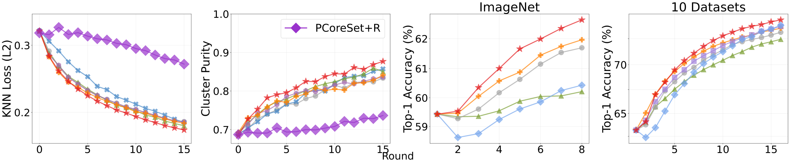
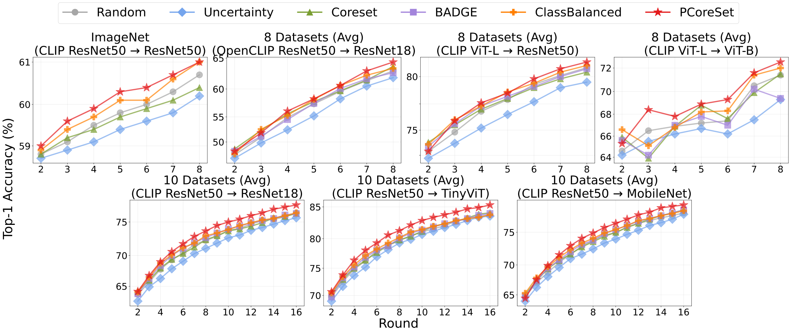
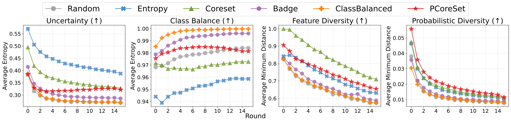
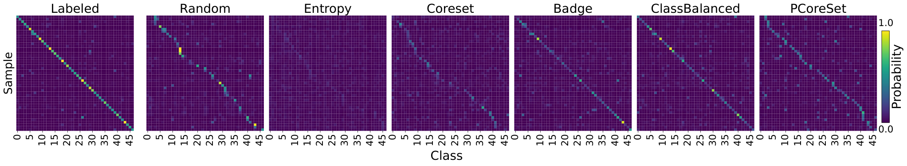
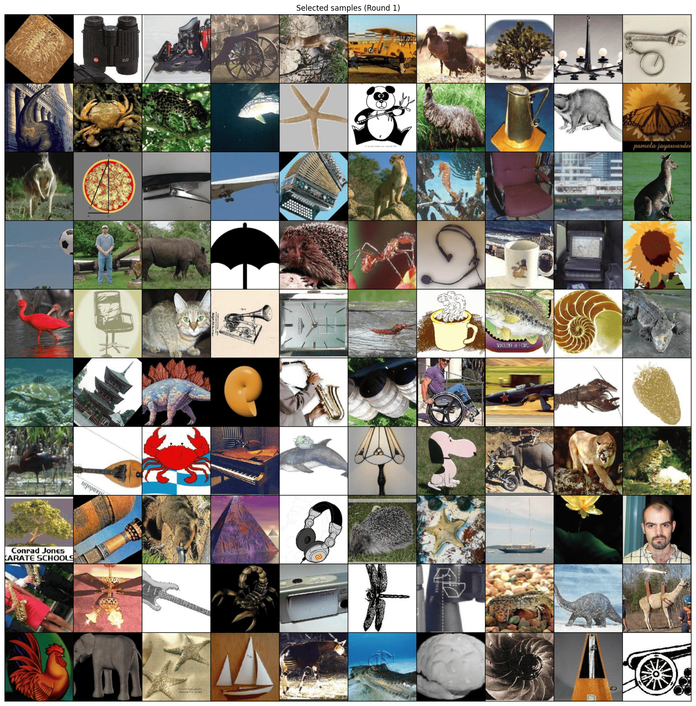

Active learning · Knowledge distillation / 2025
PCoreSetEffective Active Learning through Knowledge Distillation from Vision-Language Models
* Equal contribution


Abstract
Which examples should a distilled student ask to label?
A pretrained vision-language model can provide predictions for unlabeled images, but a limited annotation budget still leaves a difficult question: which ground-truth labels will help the student most? Standard active learning strategies often measure uncertainty or diversity without accounting for the structure supplied by a distillation teacher.
ActiveKD combines active learning with semi-supervised knowledge distillation from a zero-shot or few-shot vision-language teacher. PCoreSet is its acquisition strategy: it selects images that extend coverage of the student’s class-probability space. The motivation is that teacher predictions exhibit structured clusters, and distillation propagates that structure into student predictions. Labels from underrepresented regions can therefore help both student learning and subsequent acquisition.
Experiments on 11 visual-recognition datasets examine teacher settings, student architectures, and performance across annotation rounds. In the revised v2 evaluation, PCoreSet ranks first in 64 of 73 aggregate settings. Further analyses compare the selected samples’ uncertainty, class balance, feature diversity, and probability-space diversity, and visualize how teacher structure develops in the student.
Method
ActiveKD supplies the supervision; PCoreSet spends the label budget


Figure 2 · Paper v2.
Each round trains a student on the current labeled set and teacher predictions for labeled and unlabeled data. The implementation uses DHO for this distillation step. With a zero-shot teacher, the pretrained vision-language model supplies supervision without task-specific teacher training. With a few-shot teacher, CLAP adapts the teacher using the current labeled set.
PCoreSet then applies greedy farthest-first selection to the student’s class probabilities. It starts with the labeled examples as covered points, chooses the unlabeled point whose nearest covered neighbor is farthest away, adds that point to the covered set, and repeats until the new annotation batch is full. All selected images are then labeled and added to the training set.
Updating the covered set within a batch prevents the procedure from repeatedly selecting nearby examples. The important change from feature-space CoreSet is the representation used for distance: a C-dimensional probability vector instead of an H-dimensional feature embedding. The paper gives selection complexity O(CMN), compared with O(HMN), for M selections from N candidates; the dimensional advantage depends on C being smaller than H.
Section 3; Algorithm 2 · Paper v2.
Prediction structure
Why probability-space coverage?
The paper models the teacher’s predictions as lying within K clusters in the class-probability simplex. Under an ε-convergence assumption for the student, the optimal distilled prediction blends a ground-truth class vector with the teacher prediction. This shifts teacher clusters toward class-dependent centers, with a radius bounded by the weighted teacher radius plus approximation error.
This proposition describes how teacher structure can propagate under the stated assumptions. It motivates searching for labels that cover diverse prediction regions; it does not establish a universal guarantee that PCoreSet will outperform every acquisition strategy. The empirical tests ask whether the proposed selection rule accelerates the predicted clustering behavior.


Figure 7 · Paper v2.
PCoreSet+R replaces farthest-first acquisition with a nearest-first rule. It produces the highest KNN loss and lowest cluster purity in this comparison, while PCoreSet shows the opposite pattern. The same selected labels also improve the few-shot teacher. Together, these observations support a feedback loop: better coverage improves teacher adaptation and student distillation, which in turn improves the representation used for later selection.
Results
Compare both the training framework and the selection rule
All strategies begin with one labeled image per class and acquire one additional class-sized batch per round. ImageNet uses eight rounds; the other datasets use sixteen. Results average five runs with 95% confidence intervals. ImageNet acquisition uses a 100,000-image unlabeled candidate subset. These settings matter when comparing the absolute label budgets across datasets.
| Evaluation / acquisition | No distillation | Zero-shot ActiveKD | Few-shot ActiveKD |
|---|---|---|---|
| ImageNet · Random | 33.36 ± 0.45 | 60.69 ± 0.16 | 60.49 ± 0.12 |
| ImageNet · CoreSet | 26.61 ± 0.90 | 60.58 ± 0.07 | 59.01 ± 0.42 |
| ImageNet · ClassBalanced | 34.44 ± 0.60 | 61.07 ± 0.11 | 61.13 ± 0.07 |
| ImageNet · PCoreSet | 33.41 ± 0.41 | 61.16 ± 0.14 | 61.57 ± 0.24 |
| 10 datasets · Random | 63.10 ± 4.33 | 76.31 ± 0.88 | 77.48 ± 0.86 |
| 10 datasets · CoreSet | 64.99 ± 3.01 | 76.20 ± 0.91 | 77.63 ± 0.57 |
| 10 datasets · ClassBalanced | 63.57 ± 4.33 | 76.28 ± 0.87 | 77.56 ± 0.66 |
| 10 datasets · PCoreSet | 64.94 ± 3.25 | 77.44 ± 0.84 | 78.81 ± 0.42 |
Table 1; selected rows · Paper v2.
The large gain comes from adding teacher supervision: averaged over the acquisition methods evaluated on ImageNet, accuracy rises from 31.72% without distillation to 60.79% with zero-shot ActiveKD. PCoreSet’s additional contribution is measured against other acquisition rules within the same training setting. For example, on the other ten datasets with a few-shot teacher, PCoreSet reaches 78.81%, compared with 77.48% for random acquisition.
Few-shot teacher adaptation is helpful on the ten-dataset average, but is not uniformly better on ImageNet: random acquisition changes from 60.69% to 60.49%, whereas PCoreSet improves from 61.16% to 61.57%. Without distillation, PCoreSet is also not always the strongest strategy. These distinctions keep the framework’s contribution separate from the acquisition rule’s contribution.


Figure 5 · Paper v2.
The advantage generally becomes clearer after the earliest rounds. The evaluation includes ResNet, MobileNet, TinyViT, and ViT students. BADGE is omitted from the ImageNet comparison because storing gradients for 1,000 classes exceeds the experiment’s memory budget; its absence is not evidence of a measured accuracy result.
Analysis
What kinds of examples does PCoreSet select?


Figure 8 · Paper v2.
Entropy sampling favors uncertainty; class-balanced selection spreads predicted classes; feature CoreSet spreads embeddings. The diagnostics explain why these objectives are not interchangeable. Feature CoreSet achieves strong feature diversity but weak class balance, whereas PCoreSet ranks third on uncertainty and class balance and second on feature diversity in this analysis.
The paper measures uncertainty and class balance with normalized Shannon entropy, and both diversity measures with normalized average minimum distances. The plots average the ten non-ImageNet datasets. They characterize the selected batch rather than directly measuring the student’s final accuracy.


Figure 9 · Paper v2.


Figure 10 · Paper v2.
Resources & scope
Reproducing the active-learning cycle
The official repository provides training and acquisition code. Reproduction requires matching the initial labels, per-round budget, teacher setting, and student initialization; comparing methods with different starting representations would conflate selection quality with pretraining. The paper reports five seeds rather than a single favorable annotation sequence.
The evidence is limited to image classification. The probability-cluster analysis uses assumptions about the teacher and student convergence; performance on detection, segmentation, or other modalities would require new representations and acquisition procedures. A stronger or adapted teacher is not automatically a better choice in every dataset, as the ImageNet teacher comparison demonstrates.
DHO and PCoreSet address complementary parts of the same learning problem. DHO changes how a student learns from labels and a teacher. PCoreSet changes which examples receive new labels. ActiveKD combines these parts into a repeated training-and-annotation loop.
Sections 4–5; Appendices B–E · Paper v2.
Reference
BibTeX
@article{kang2025pcoreset,
title={PCoreSet: Effective Active Learning through Knowledge Distillation from Vision-Language Models},
author={Kang, Seongjae and Lee, Dong Bok and Jang, Hyungjoon and Kim, Dongseop and Hwang, Sung Ju},
journal={arXiv preprint arXiv:2506.00910},
year={2025},
url={https://arxiv.org/abs/2506.00910}
}Explanations on this page summarize the paper. Figures and numbered results are attributed to version 2; see the paper for complete protocols and references.